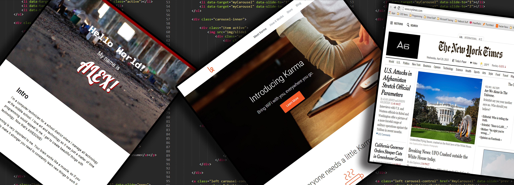

I’m a computer technician for a school district where I manage all technology at the middle school. I love art and technology so it was just a matter of time programming would appeal to me. I get to create beautiful things with technology. Now that’s AWESOME!
Learning is very important to me. Your brain works like a muscle, so if you want to make it stronger you need to constantly learn new things to work it out.
I was born in Zacatecas, Mexico and raised in Fort Worth, Texas. ★"How Bout Them Cowboys!"★ My family migrated to the United States to give my family a better chance in life when I was 4 years old.
I love to read (mainly articles), I’m currently reading “The One Thing” by Gary Keller. On occasions I like to go out and capture pictures of street art in my city, check out my facebook.
Working for myself would be my dream job weather it’s in web development or not. I’ve had a computer repair business for a couple of years now but never pursued it full time so I mainly get work from word of mouth.
I love Classical music. My top 3 composers would have to be 1. Antonio Vivaldi 2. Phillip Glass 3. Wolfgang Amadeus Mozart